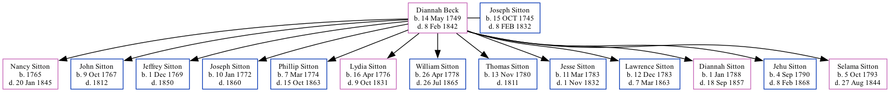

Diannah Sitton (née Beck) 1749 - 1842
[ Home ] | [ Surnames Index ] | [ Family History ]Diannah was the 6 times great-grandmother of Stephanie Hardesty (née Teten), was born in PA on May 14, 17491,2 and married Joseph Sitton (with whom she had 13 children: Nancy, John, Jeffrey, Joseph, Phillip, Lydia, William, Thomas, Jesse, Lawrence Bradley, Diannah Beck, Jehu L and Selama) in Orange, North Carolina in 1766.
She died on Feb 8, 1842 in Troy, Lincoln Co., Missouri2.
Children
- Nancy was born in 1765
- John was born on Oct 9, 1767
- Jeffrey was born on Dec 1, 1769
- Joseph was born on Jan 10, 1772
- Phillip was born on Mar 7, 1774
- Lydia was born on Apr 16, 1776
- William was born on Apr 26, 1778
- Thomas was born on Nov 13, 1780
- Jesse was born on Mar 11, 1783
- Lawrence Bradley was born on Dec 12, 1783
- Diannah Beck was born on Jan 1, 1788
- Jehu L was born on Sep 4, 1790
- Selama was born on Oct 5, 1793
Citations
- U.S. and International Marriage Records, 1560-1900 Ancestry.com Operations Inc
- U.S., Sons of the American Revolution Membership Applications, 1889-1970 Ancestry.com Operations, Inc.
Family Tree
Data (GEDCOM) maintained by Jay Weston Hannah, Omaha, Nebraska, USA.
Website generated by ged2site. Last updated on Jun 18, 2024.